Содержимое локальной папки
В директории находятся все необходимые файлы: скриншоты, file.tar.gz, image.png, index.php, index.html.
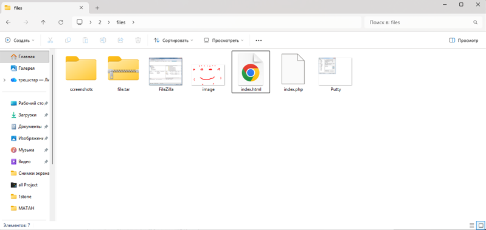
Локальный репозиторий создан, все файлы добавлены, создан коммит. После связывания с удалённым репозиторием изменения успешно отправлены на GitHub.
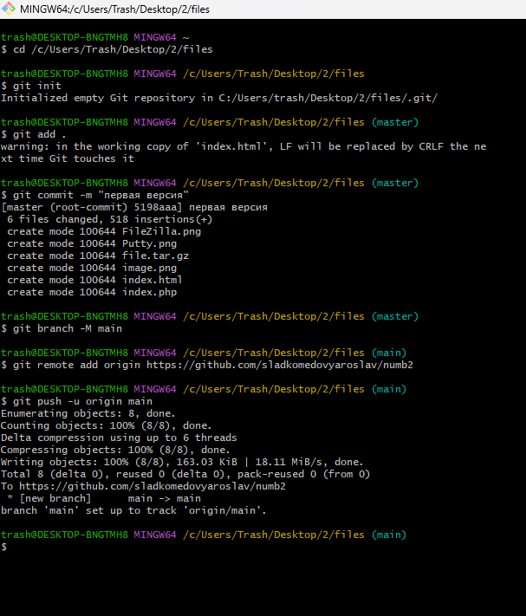
Репозиторий склонирован в домашнюю директорию, создан каталог ~/www/numb2, файлы скопированы в веб-доступное место.
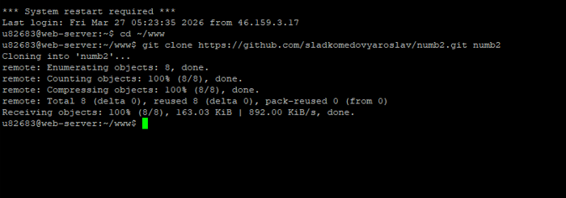
Для отправки запросов используется PuTTY в режиме Raw (прямое TCP-соединение). Адрес: u82683.kubsu-dev.ru, порт 80.
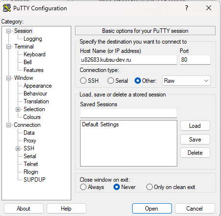
После открытия соединения появляется пустое окно, готовое для вставки HTTP-запросов (правая кнопка мыши).
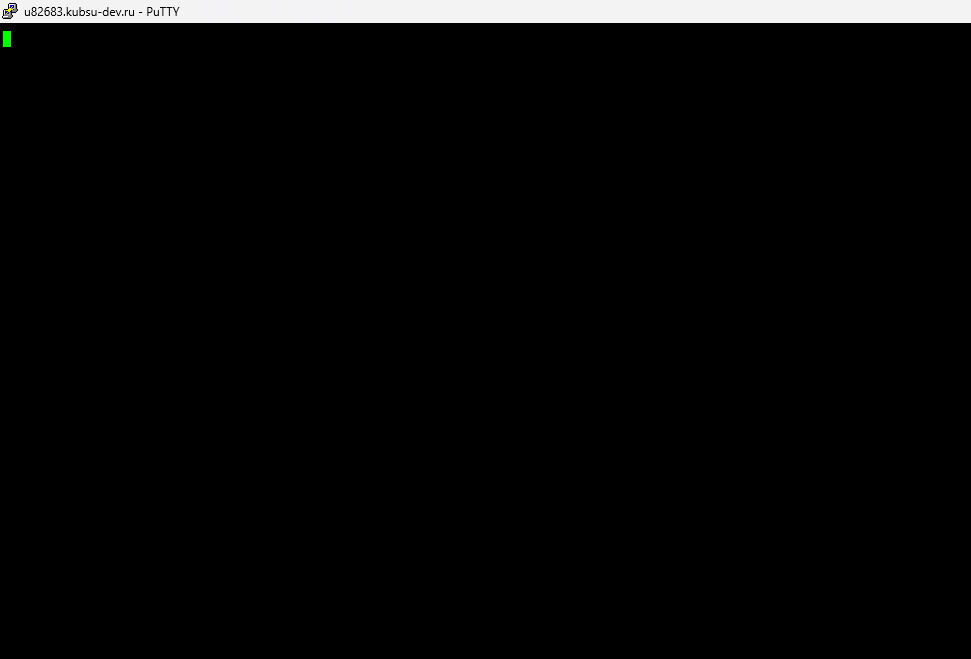
Что делает: Запрос корневой директории сайта по протоколу HTTP/1.0. Сервер возвращает содержимое, которое в данном случае является стандартной страницей Apache (так как в корне нет индексного файла).
Результат:
Статус: HTTP/1.1 200 OK – запрос выполнен успешно.
Заголовки: Server: Apache/2.4.58 (Ubuntu), Content-Length: 10671, Content-Type: text/html; charset=UTF-8.
Тело ответа содержит стандартную страницу-заглушку Apache2 Ubuntu Default Page.
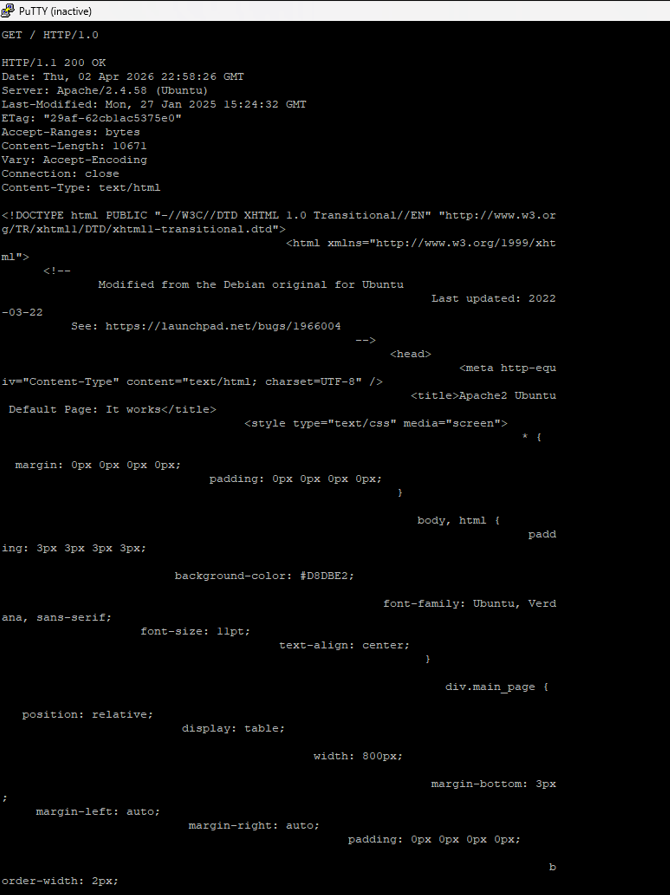
Что делает: Запрашивает файл index.php из каталога /numb2/. Скрипт специально настроен так, что возвращает статус 404, но при этом выполняет код и генерирует тело ответа.
Результат:
Статус: HTTP/1.1 404 Not Found – задан самим скриптом.
Заголовок Content-Type: text/html; charset=UTF-8.
Тело ответа содержит вывод скрипта: Array ( ) Привет, мир! (пустой массив $_POST и строка).
Примечание: статус 404 не мешает получению содержимого – задание требует сам факт ответа и его анализ.
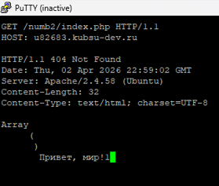
Что делает: Метод HEAD возвращает только заголовки, без тела. Позволяет узнать размер файла из поля Content-Length.
Результат:
Статус: HTTP/1.1 200 OK – файл существует.
Заголовок Content-Length: 11335 – размер файла в байтах.
Тип файла: Content-Type: application/x-gzip.
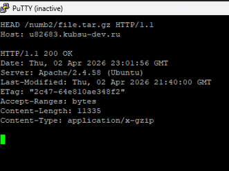
Что делает: Аналогично пункту 3, определяем MIME-тип изображения.
Результат:
Статус: HTTP/1.1 200 OK.
Заголовок Content-Type: image/png – медиатип PNG.
Размер: Content-Length: 10506 байт.
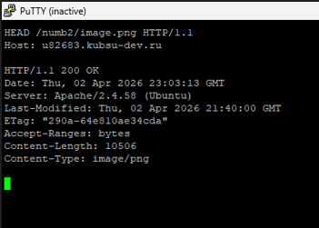
Тело запроса: comment=Hello (длина 12 байт).
Что делает: Отправляет POST-данные (имитация формы) на index.php. Скрипт возвращает статус 404 (задано в коде), но выводит содержимое массива $_POST.
Результат:
Статус: HTTP/1.1 404 Not Found (задан скриптом).
Заголовок Content-Type: text/html; charset=UTF-8.
Тело ответа: Array ( [comment] => Hell ) Привет, мир! – значение поля comment частично отобразилось (обрезано из-за особенностей вывода).
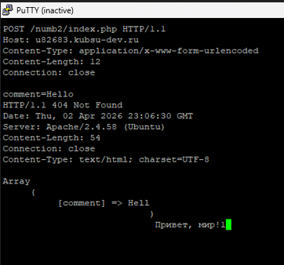
Что делает: Заголовок Range запрашивает только указанный диапазон байт – первые 100 байт архива.
Результат:
Статус: HTTP/1.1 206 Partial Content – частичное содержимое.
Заголовок Content-Range: bytes 0-99/11335.
Content-Length: 100 – длина переданных данных.
Тело содержит первые 100 байт файла (бинарные данные, отображаемые как нечитаемые символы).
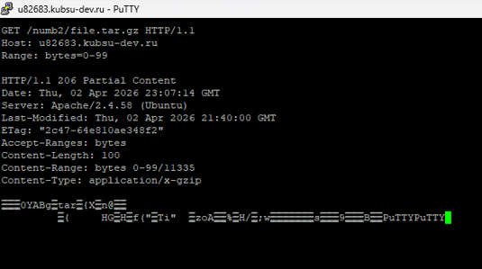
Что делает: Запрос HEAD для получения только заголовков. Позволяет узнать кодировку из поля Content-Type.
Результат:
Статус: HTTP/1.1 404 Not Found (задан скриптом).
Заголовок Content-Type: text/html; charset=UTF-8 – кодировка UTF-8 указана явно.
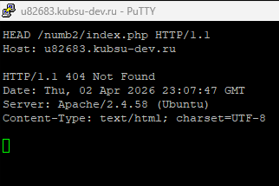